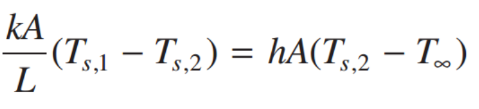
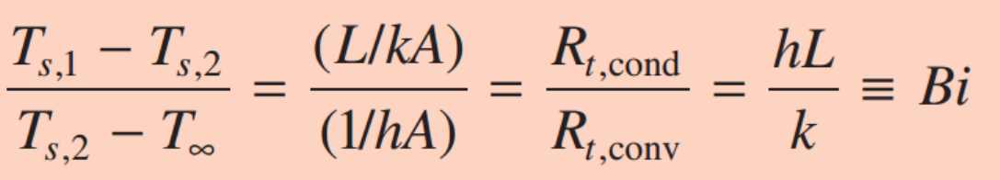
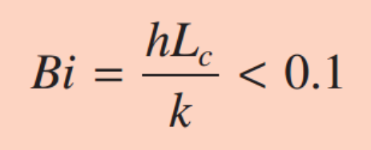
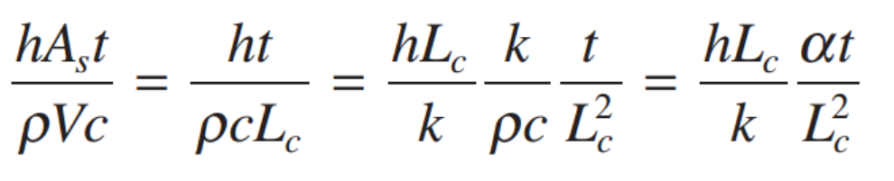
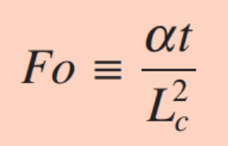

Heat equation 에서
지금까지는 사실, 시간에 따른 온도의 변화를 무시해왔다.
하지만, 이제 시간에 따른 변화가 일정한
Transient Conduction case
를 살펴보자.
일단 감을 잡기위해서, 한가지 가정을 하고 쉬운 경우부터 풀어보자.
1. Uniform Temperature distribution inside of the Solid
이 경우는 즉, 고체 내부 안에서 온도 변화(전도) 가 없다고 가정한 경우이다.
![[Heat and Mass transfer] Ch 5. Transient Conduction - part 1](./images/img-001.png)
뜨거운 돌이, 물 안에 들어가서 식는다고 생각해보자.
[열역학 제 1법칙: Q = △E + W]
여기서는 돌이 일을 안하기 때문에,
Q =
△E
(E는 돌안의 내부에너지)
시간으로 양쪽을 미분 해주면,
dQ/dt = dE/dt
물에 의한 대류 Heat flux = 돌 내부에너지 변화량 by 시간
따라서, 온도변화를 식으로 표현하면 다음과 같다.
![[Heat and Mass transfer] Ch 5. Transient Conduction - part 1](./images/img-002.jpg)
하지만,
위 식의 첫번째 가정은 고체 내부의 온도변화 무시 였다.
실제로는 당연히 당연히 고체 돌 안의 온도 변화가 있겠죠??
여기서 과학자들은 생각한 겁니다.
만약에. 정말 만약에.
고체 내부의 온도변화 = 0 은 아니겠지만,
대류에 의한 온도변화보다 비교적 작다면??
내부 온도변화를 무시하고,
편하게 위의 식을 쓸 수 있지 않을까???
밑의 예시를 보면서, 다시 자세하게 생각해보자.
![[Heat and Mass transfer] Ch 5. Transient Conduction - part 1](./images/img-003.png)
지금 사진을 보시면,
왼쪽 고체의 온도는 Ts1 -> Ts2(표면) 으로 감소하였고 by 전도
오른쪽 기체에 의해 표면은 Ts2 -> T∞으로 감소하였다. by 대류.
표면에서의 Heat flux는 동일하므로,
q cond = q conv

자 우리가, 구하고 싶은 것은, 전도 온도변화/ 대류 온도변화 비율이다.
따라서, 나누어 주면.

다음과 같이 hL/k라는 간단한 식이 나온다.
잘 생각해보면 우리는 온도/온도 이기 때문에 Dimensonless 이다.
결국, Reynolds number처럼.
Demensionless parameter, Biot number(Bi)
가 유도 되었다.
그리고, 과학자들은 기준을 다음과 같이 잡고,

0.1 이하 일때는, 고체 내부의 온도변화를 무시하고.
![[Heat and Mass transfer] Ch 5. Transient Conduction - part 1](./images/img-007.png)
위에서 구한 식을 사용하기로 하였다.
Biot number에 대해서 잠깐 알아보면,
Conduction resistance/ convection resistance 였다.
꼭 기억 할 것은,
Biot number의 핵심은 고체내부의 온도변화가 주요 target이라는
점.
Lc = Characeristic length이고,
증명자체에서 보면, 전도의 heat flux term 에서 출발하였다.
결국, 전도열이 이동한 길이를 뜻하기 때문에,
Lc = volume/Area 로 정의한다.
ex)
long cylinder 경우, Lc = r/2
Sphere 의 경우 Lc = r/3
Bi < 0.1 이라고 가정하고, 주어진 식을 한번 정리해보자.

여기서 마지막 해의 왼쪽은 Biot number이고,
오른쪽은 Fourier number로 다음과 같이 표현 된다.

Fiot number (Fo)
는 사실, 전도열/저장된 열 비율을 나타낸다.
따라서,
![[Heat and Mass transfer] Ch 5. Transient Conduction - part 1](./images/img-010.png)